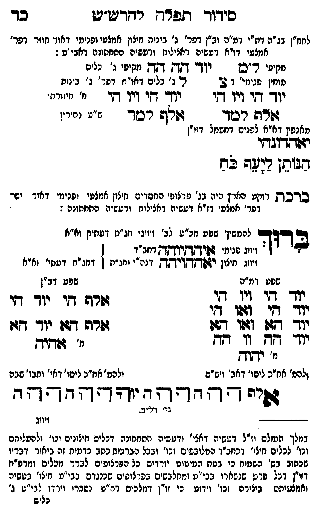

Neue Klartextfassung
[לחח"ן בג"ה דת"י דמ"ה וב"ן דפר' ג' בינות חיצון אמצעי ופנימי דאור חוזר דפר' אמצעי דז"א דעשיה דכללות ורביעיה התחתונה דאבי"ע:] [מקיפי ל"ם] יוד הה הה [מקיפי ג' כלים] [מוחין פנימי דצ'] צ ל ג' [ג' כלים דאו"ח דפר' ג' בינות] === טבלה === [טור ימין] יוד הי ויו הי אלף למד [טור אמצעי] [ב' חיוורתי] [ע"ס בנהורין] [טור שמאל] יוד הי ויו הי אלף למד === סוף טבלה === [מלפין דא"א לפנים בחשמל זו"ן[?]] יאהדונהי הנותן ליעף כח ■ ברכת רוקע הארץ ■ [היא בג' פרצופי החסדים חיצון אמצעי ופנימי דאור ישר דפר' אמצעי דז"א דעשיה דכללות ורביעיה התחתונה:] ברוך [להמשיך שפע מכ"ע לב' זיווגי חג"ת דעתיק וא"א] [זיווג פנימי איההיוהה דחב"ד] [זיווג חיצון יאההויהה דכ"ח ותו"ח] [דחג"ת דעתי' וא"א] === טבלה === [טור ימין — שפע דמ"ה] יוד הי ויו הי יוד הי ואו הי יוד הא ואו הא יוד הה וו הה [מ' יהוה] [ולכת' חב"ד ליסוד דאבא ויש"ס] [טור שמאל — שפע דב"ן] אלף הי יוד הי אלף הא יוד הא [מ' אהיה] [ולכת' חב"ד ליסוד דאי' ותבו' שבה] === סוף טבלה === אלף ה הה ו וה יה יהוה הההה
Original gegen neue OCR · Niqqud für Vergleich ausgeblendet
Original
[לחח"ןK052-001 בג"ה דת"י דמ"ה וב"ן דפר'K052-002 ג' בינותK052-003 חיצון אמצעי ופנימי דאור חוזר דפר' אמצעי דז"אK052-004 דעשיה דכללות ורביעיה התחתונה דאבי"ע:] [מקיפי ל"ם] יוד הה הה [מקיפיK052-005 ג' כלים] [מוחין פנימי דצ'] צ ל ג' [ג'K052-006 כלים דאו"ח דפר' ג' בינות] === טבלה === [טור ימין]K052-007 יוד היK052-008 ויו הי אלף למד [טור אמצעי] [ב' חיוורתי] [ע"ס בנהורין] [טור שמאל]K052-009 יוד היK052-010 ויו הי אלף למד === סוף טבלה === [מלפיןK052-011 דא"א לפנים בחשמל זו"ן] יאהדונהי הנותן ליעף כח ■ ברכתK052-012 רוקע הארץ ■ [היאK052-013 בג' פרצופי החסדים חיצון אמצעי ופנימי דאור ישר דפר' אמצעיK052-014 דז"א דעשיה דכללות ורביעיה התחתונה:] ברוך [להמשיךK052-015 שפע מכ"ע לב' זיווגי חג"ת דעתיק וא"א] [זיווגK052-016 פנימי איההיוהה דחב"ד] [זיווגK052-017 חיצון יאההויהה דכ"ח ותו"ח] [דחג"ת דעתי' וא"א] === טבלה === [טור ימין —K052-018 שפע דמ"ה]K052-019 יוד הי ויו הי יוד הי ואו הי יוד הא ואו הא יוד ההK052-020 וו הה [מ' יהוה] [ולכת' חב"ד ליסוד דאבא ויש"ס] [טור שמאל — שפע דב"ן] אלף הי יוד הי אלף הא יוד הא [מ' אהיה] [ולכת' חב"ד ליסודK052-021 דאי' ותבו' שבה] === סוף טבלה === אלף ה הה ו וה יה יהוה ההההK052-022
OCR · fehlbar
סיךוך ו[פרח רדדטש"ש בך לחח"ןK052-001 בג"ה דת"י דמ"ה וב"ן דפרץK052-002 ג' בינוחK052-003 חיצון אמצעי ופנימי דאור חוזר דפר' אמצעי דזיאK052-004 דעשיה דאצילוח ודעשיה החחחידה דאבי"ע : חחיפי ר"סן - יוך ותל- דד מידי נ' דליל מוחין פנימי' ד 23 ריK052-005 ג' ∅K052-006 כלים דאו"ח דפר' ג' בינותK052-007 יוד זיK052-008 ויו דיK052-009 יוד דיK052-010 ויו חי י' יייייז' שד רסד - זזפ9 רכזד ג": נזי' מאנפיןK052-011 דא"א לפנים דחשמל דזו"ן יזודדוגךי דגותן רשה לש ב דכךK052-012 רוקע הארץ היהK052-013 בג' פרצופי החסדים חיצון אמצעי ופנימי דאור ישר דפר' אמצטיK052-014 דז"א דעשיה דאצילוח ודעשיה 0חחתונה : 2 ע[ש להמשיךK052-015 שפע מכ"ע לב' זיווגי חג"ת דעתיק וא"א - זיווגK052-016 פנימי 4פיקקךקיךץךץ דחב"ד ] זיוגK052-017 חיצון יזשקךקזיךךק דנה"י וחג"ת ן דחג"ח דטחי' וא"אK052-018 שפע דמ"ה שפע דב"ן גד 4י גג 9 י [[. 3[ זרה דיK052-019 יוד חי ל ( יודך דזית וזו (-י יוך 127K052-020 וו 477 גדורה גזו יוך- דז: יוך דא וו' ד- י זגדיץ יי' ידוד ולהמ' אחיכ ליסו' דאב' וישיס ולהמ' אח"כ ליסו'K052-021 דאי' וחבו' שכה פיח - ' ר- ד - יז - ד' רח - ד ל בר' ד0"ב. ----- זיווג במלך העולם וז"ל דטשיה דאצי' ודעשיה התחתונה דכלים נזיצינים וכו' ולהטלוחם וכו' לכלים חיצי' דבחב"ך הלובשים וכו' ובכל הברכוח כחב כדמות זה ביאור דבריו שכחוב בש' השנוח כי בטח המיטוט יורדים כל הפרצופים לברר מכלים ומרפ"ח דזוין דכל פרט שנשארו בבי"ע ומחלבשים בפרצופים שכנגדם בבי"ט חיצו' בטשיה ואמצטיתם ביצירה וכו' וידוע כי זו"ן דמלכים דה"פ נשגרו וידדו לבי"ט ג' גליףK052-022